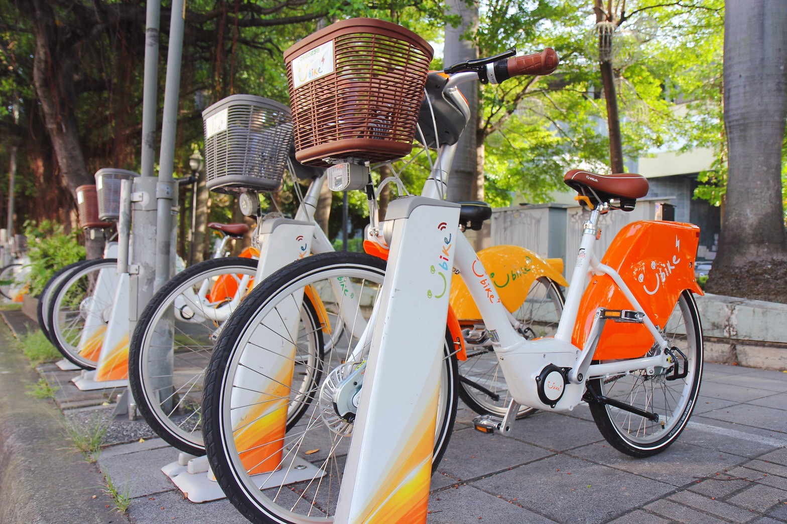

車站總計
目前臺中市的 ibike 共有
處車站
車站停靠點
目前所有車站為下列：
東區
中區
西區
南區
北區
西屯區
南屯區
北屯區
豐原區
大里區
太平區
清水區
沙鹿區
大甲區
東勢區
梧棲區
烏日區
神岡區
大肚區
大雅區
后里區
霧峰區
潭子區
龍井區
外埔區
和平區
石岡區
大安區
新社區
依定位點找尋車站
在附近的車站：
開啟定位
自己動手搜
找你心儀的車站：
Modal title